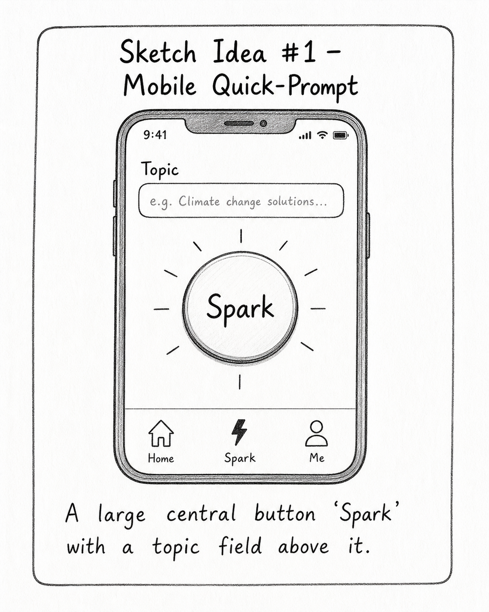
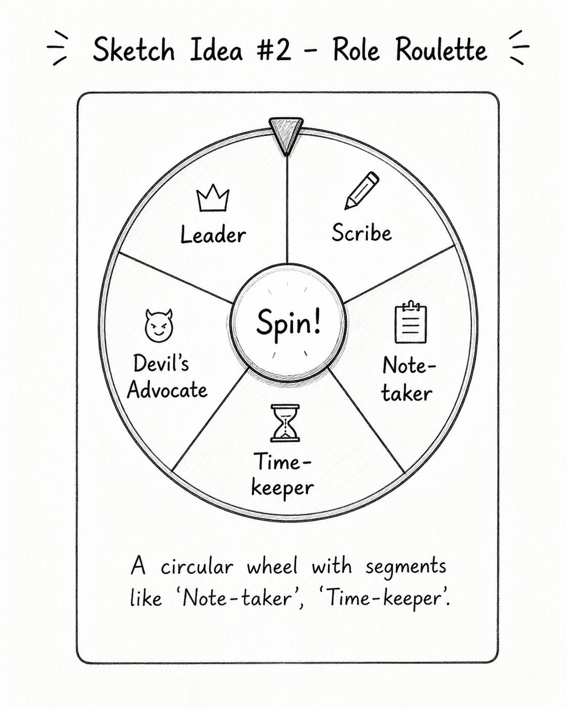
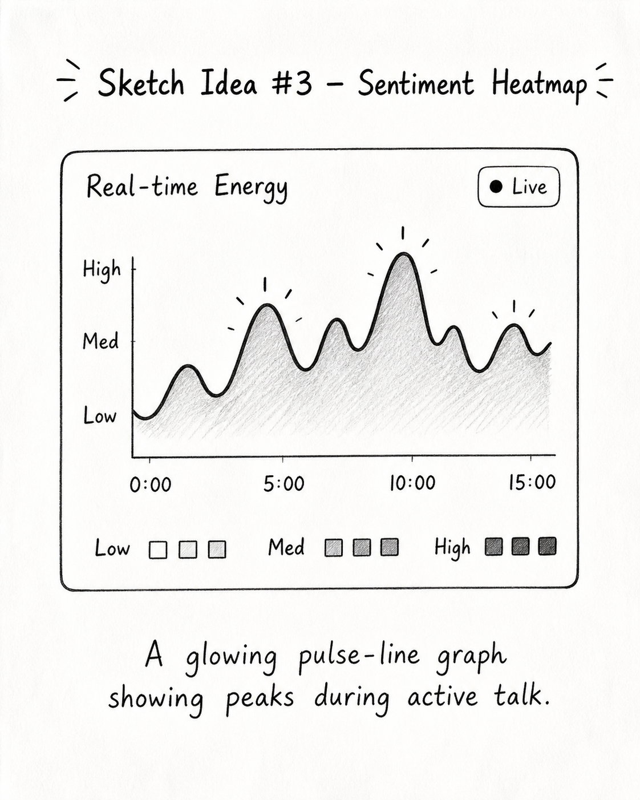
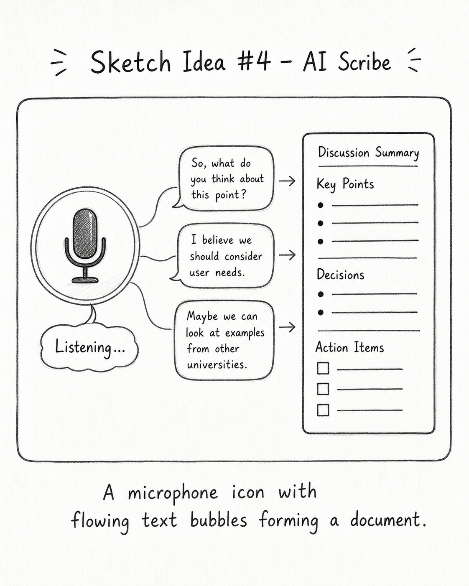
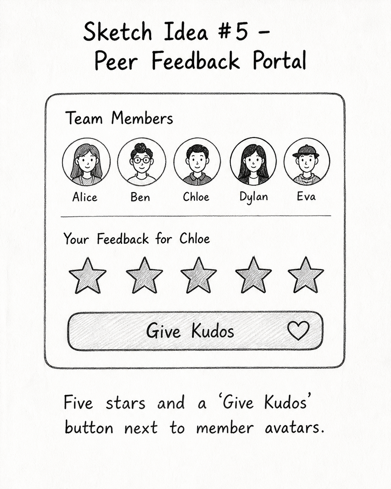
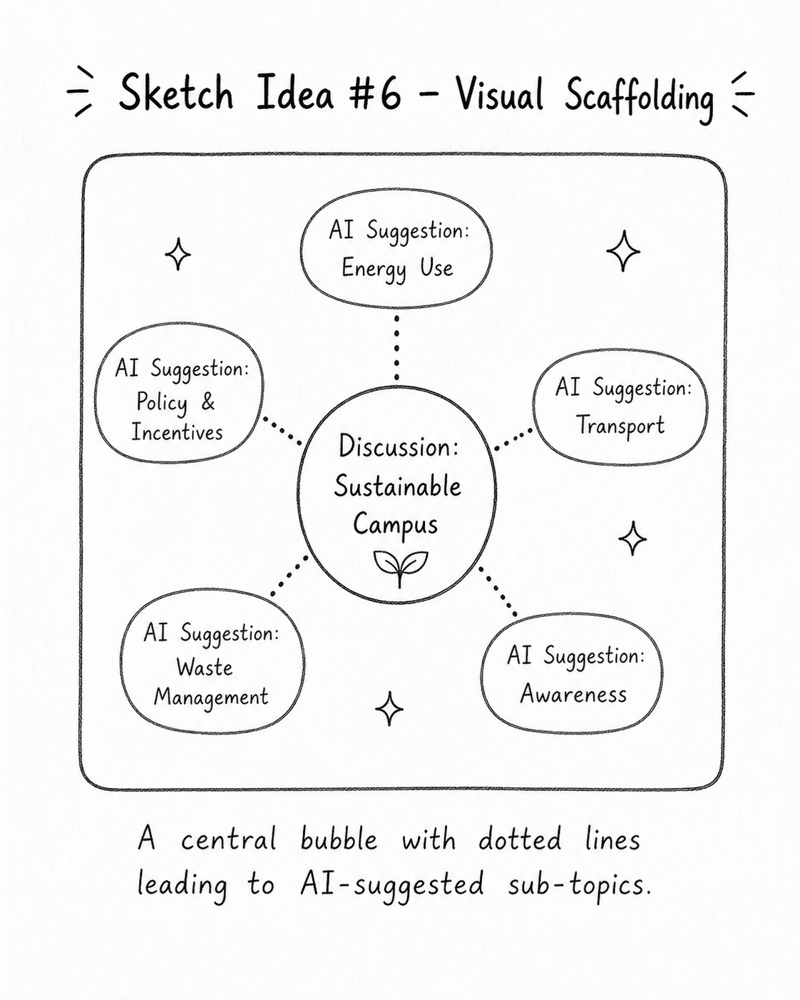
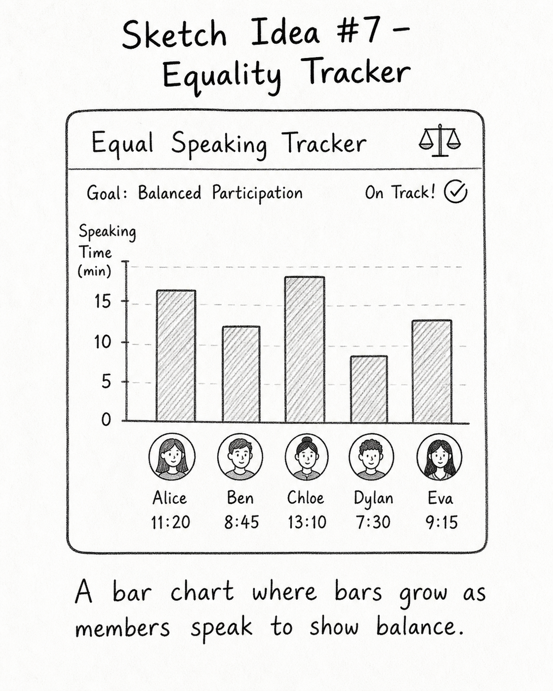
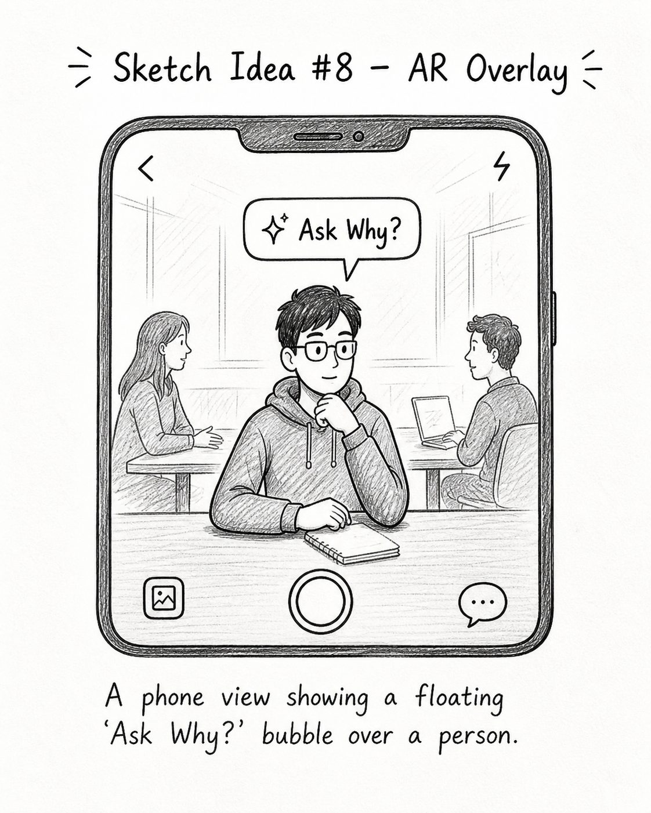
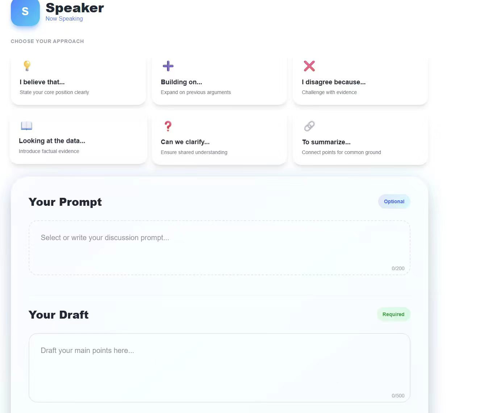
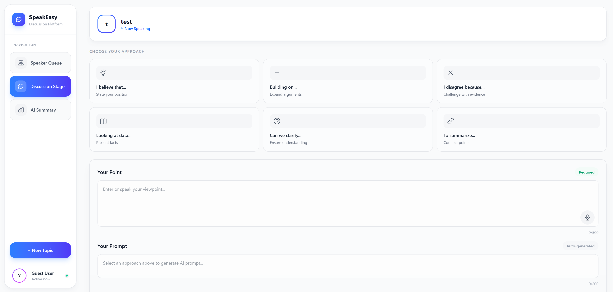

👥 Group Members

Zhaoguang Hu
Student ID: 2257688

Haoyu Chen
Student ID: 2361801

Yihan Shen
Student ID: 2362075

Panyi Qin
Student ID: 2362163
1 Motivation & Research
1.1 The Why
In every XJTLU classroom, group discussion is meant to be a space where ideas collide, perspectives broaden, and every student finds their voice. But the reality often falls short. We have seen it ourselves: the student who stays silent because they are afraid their idea is not good enough; the group member who drifts away mid-discussion, lost and unable to re-enter the conversation; the quiet contributor whose insight is drowned out by louder voices; and the entire group walking away with no clear record of what they actually decided.
We chose the Social Connectivity (B1) track — XJTLU Group Discussions — because these problems are not abstract research questions. They are daily experiences in our own seminars, labs, and project meetings. Existing tools like Slack, Padlet, and Miro excel at communication but were never designed to scaffold the discussion itself. They offer no bridge for the shy student facing the "first-sentence barrier," no compass for the distracted student who has lost the thread, and no mirror for the group to reflect on what paths they did not take.
Our project, SpeakEasy, is not another chat app. It is a human-centered scaffolding tool that wraps around the natural rhythm of classroom discussion — lowering the threshold to speak, anchoring attention with a visible discussion structure, and transforming post-discussion reflection from an afterthought into an act of critical learning. We believe technology in the classroom should not automate conversation; it should make every participant more confident, more aware, and more reflective.
1.2 The Gap — Academic & Commercial Landscape
Academic Papers
1. Cooperative Learning in Higher Education
Barbara J. Millis (2010)
3 Things Done Well
- Establishes clear structured roles for accountability
- Robust framework for cross-disciplinary cooperative learning
- Links structured interaction to deep cognitive processing
3 Things Missed
- Lacks integration for digital-first / hybrid environments
- No real-time data feedback loops for instructors
- Underemphasizes emotional intelligence in group conflict
2. Discussion as a Way of Teaching
Brookfield & Preskill (2012)
3 Things Done Well
- Diverse democratic techniques for inclusive participation
- Practical tools for critical thinking through dialogue
- Focuses on creating psychological safety for discussion
3 Things Missed
- Limited scalability discussion for large courses (MOOCs)
- No frameworks for AI-assisted discussion quality assessment
- Does not fully explore barriers for non-traditional students
3. The Power of Peer Discussion
Knight, J. K., et al. (2013)
3 Things Done Well
- Logical interaction is more critical than just finding the right answer
- Strong empirical evidence for benefits of peer-to-peer dynamics
- Focuses on conceptual shifts during peer explanation
3 Things Missed
- Lacks long-term data on knowledge retention after discussion
- Does not account for cross-cultural variations in peer communication
- Minimal guidance on mitigating dominant personalities in groups
4. Active Learning in Science & Engineering
Freeman, S., et al. (2014)
3 Things Done Well
- Massive meta-analysis showing undeniable performance gains
- Clear metrics for success including reduced failure rates
- Successfully advocates shift away from traditional lecturing in STEM
3 Things Missed
- Focuses heavily on quantitative outcomes, missing qualitative experiences
- No detailed cost-benefit analysis for institutional implementation
- Applicability to humanities and social sciences not explicitly addressed
Commercial Products
1. Slack — Channel-based Collaboration
3 Things Done Well
- Excellent real-time threading keeps discussions organized
- Massive integration ecosystem (Google Drive, Zoom, etc.)
- Powerful search history as a persistent knowledge base
3 Things Missed
- Lacks built-in pedagogical structures (roles, discussion prompts)
- High noise-to-signal ratio can distract from deep discussion
- No native tools for visual scaffolding or mind-mapping within chat
2. Miro — Visual Whiteboard Platform
3 Things Done Well
- Infinite visual canvas for non-linear brainstorming and co-creation
- Extensive template library for various discussion frameworks
- Real-time cursor tracking creates a strong sense of presence
3 Things Missed
- Managing text-heavy deep discussions can become cluttered
- Lacks automated synthesis tools for large amounts of visual data
- Steep learning curve for users uncomfortable with spatial interfaces
3. Padlet — Digital Notice Board
3 Things Done Well
- Extremely low barrier to entry; students can contribute instantly
- Versatile post types (images, videos, voice notes) for different styles
- Simple visual organization easy for instructors to moderate
3 Things Missed
- Lacks deep hierarchical threading for complex debates
- Limited data analytics for tracking individual engagement over time
- Free version highly restrictive, limiting long-term project use
4. Gather.town — Virtual Gathering Space
3 Things Done Well
- Engaging and playful spatial interaction design
- Proximity-based audio mimics natural conversation dynamics
- Strong sense of co-presence and informal social interaction
3 Things Missed
- Weak in persistent discussion documentation and archiving
- No built-in pedagogical scaffolding or discussion structure tools
- Gaming-style interface may distract from focused academic discussion
1.3 The Stakeholders — User Personas
Two distinct personas were developed based on our research into XJTLU group discussion dynamics. Ethan represents our primary user — the shy, easily distracted student who struggles to participate. Zhang Ming represents the secondary user — the team leader who needs to coordinate group work efficiently.

Bio
Ethan is a junior at XJTLU who often feels afraid to express his opinions during group discussions. He is easily distracted by notifications and online information, which makes it difficult for him to stay focused and understand the key content of each discussion. He wants to contribute but fears his ideas are "not good enough."
Goals
- Discuss in a relaxed, non-judgmental atmosphere
- Maintain focus during collaborative work
- Complete group tasks without holding back teammates
- Catch up with group progress easily after losing focus
Frustrations
- Gets easily distracted during teamwork
- Often forgets key points after discussions
- Afraid to express ideas in front of teammates
- Struggles to rejoin discussion after zoning out
Design Implications
- The system should reduce distraction during group discussion
- The interface should support shy users in expressing ideas more comfortably
- The system should help users summarise and review key discussion points
- There should be a low-pressure way to make the first contribution

Bio
Zhang Ming is a student team leader who often takes responsibility for organizing course projects and competitions. His main challenge is quickly forming a strong team, assigning tasks clearly, and tracking progress — not participating in discussion itself.
Goals & Motivation
- Quickly publish recruitment information to find capable members
- Recruit members with matching skills for the course project
- Clarify tasks and deadlines clearly to the team
- Manage group progress to ensure on-time completion
Frustrations
- Narrow reach of recruitment information
- Inefficient screening through private chats
- Low member motivation after team formation
- Fragmented task management in WeChat groups
Design Implications
- The system should support fast and targeted member recruitment
- The interface should reduce repetitive screening work for team leaders
- The system should make task assignment and deadlines more visible
- The platform should centralize collaboration instead of relying on fragmented chat tools
2 User Requirements
2.1 User Journey Map
Scenario: Participating in an in-class XJTLU group discussion for coursework. Goal: To understand the task clearly, participate comfortably, stay focused, and complete the group task successfully. The journey map reveals that the emotional low point appears at the starting stage — when the student is thinking "Should I speak now?" or "What if my idea is not good enough?" — and that reflection support is weakest after the discussion ends.
| Stage | Actions | Thoughts | Emotions | Pain Points | Opportunities |
|---|---|---|---|---|---|
| Before the discussion | Reads the task, listens to instructions, joins a discussion group. | "Do I understand the task clearly?" "Will I be able to contribute?" |
Uncertain, slightly nervous | Discussion goal may not be clear enough at the start. Some students already feel pressure before speaking. | Provide clearer task overview, simple objectives, and preparation support before discussion begins. |
| Starting the discussion | Looks at teammates, waits for someone to speak first, listens to opening conversation. | "Should I speak now, or wait?" "What if my idea is not good enough?" |
😰 Awkward, hesitant, pressured | Quiet or less confident students struggle to join the conversation naturally. This is the emotional low point. | Add ice-breakers, anonymous idea submission, and low-pressure initiation mechanisms. |
| During the discussion | Listens, responds, shares ideas, and tries to follow the group's progress. | "What is the main point now?" "I think I missed something." |
Engaged but also stressed or confused | Fast discussion pace, interruptions, and distractions make it difficult to stay focused. Unequal participation appears. | Support real-time key-point tracking, structured discussion flow, and a cleaner interaction design. |
| Finishing the discussion | Helps summarise ideas or listens while others organise the final answer. | "Have we answered the task properly?" "Did I contribute enough?" |
Uncertain, reflective | Some students may not fully understand the final result or feel their contribution was limited. | Provide a shared summary, visible group decisions, and clearer task completion structure. |
| After the discussion | Reflects on the teamwork experience and the final output. | "What did we actually conclude?" "How could I do better next time?" |
Reflective, sometimes disappointed | There is often little support for review, feedback, or post-discussion reflection. | Add review notes, discussion summaries, decision tree playback, and reflective feedback to help students improve over time. |
Key Pain Points
- Unclear task structure at the beginning
- Low confidence when joining discussion
- Difficulty staying focused and following key points
- Unequal participation during teamwork
- Lack of review and reflection support afterwards
Design Opportunities
- Clearer task guidance before discussion starts
- Low-pressure participation support (anonymous submission)
- Real-time discussion structure visualization
- A distraction-free interface with focus anchors
- Post-discussion reflection tools with decision tracing
Journey Stages
- Before the discussion — preparation
- Starting the discussion — awkward initiation
- During the discussion — focus & participation
- Finishing the discussion — summarising
- After the discussion — reflection & review
2.2 Requirements List — 3 "Playful" Must-Haves
For the system to be considered playful, it must satisfy these three requirements, each mapped to the most critical pain point in the user journey:
1. AI Prompts — Sentence Templates for Low-Pressure Speaking
Problem addressed: Students feel nervous and hesitate to speak at the beginning (emotional low point in journey map).
The system provides AI-generated sentence templates and ice-breaking prompts that give students a scaffold for their first contribution. During the Opening stage, templates such as "I think that...", "In my opinion...", and "I would like to start by saying..." are displayed. As the discussion progresses through different stages (First Point, Adding Detail, Conclusion), the templates dynamically update to match the current speaking context. This directly addresses "first-sentence anxiety" — instead of staring at a blank mental canvas, students have a starting point that lowers the cognitive and emotional barrier to participation.
2. Agree / Disagree Voting — Real-Time Participation Balancing
Problem addressed: Participation is often unbalanced; some students dominate while others remain silent.
When a speaker expresses an opinion, all group members are asked to cast an Agree or Disagree vote. Results are displayed in real time as a simple group tendency bar (e.g., "5 agree / 2 disagree"). This mechanism serves a dual purpose: it gives quieter students a low-effort way to participate without needing to formulate a full verbal response, and it provides the group with an instant pulse-check on whether an idea has genuine support. Rather than letting dominant voices carry decisions by default, the voting mechanism ensures every member's perspective is counted and visible.
3. Decision Tree Playback & AI Summary — Post-Discussion Reflection
Problem addressed: Little support for review and reflection after the discussion; students struggle to remember what was decided and why.
After the discussion ends, the system generates an AI summary of key points raised by group members and the final group conclusion. Beyond a flat summary, the system also reconstructs the discussion as a decision tree, showing the group's choices at each key divergence point — green branches for the adopted path, gray branches for abandoned alternatives. This combination of AI summary (for quick review) and decision tree playback (for deep reflection on why decisions were made) transforms post-discussion review from a passive afterthought into an active, critical learning experience.
2.3 Evidence of Life — User Research Photos
During our user research phase, we observed and participated in several XJTLU classroom group discussions to understand the real challenges students face. The following five photos document our field research process.

Photo 1 — Team brainstorming and design session

Photo 2 — Team brainstorming and design session

Photo 3 — System design

Photo 4 — System design

Photo 5 — System design
3 Ideation & Design Alternatives
3.1 Crazy Eights — Rapid Sketching
We used the Crazy Eights method to generate eight rapid hand-drawn UI concepts in eight minutes. Each sketch explores a different interaction mechanism for supporting group discussion. This divergent ideation step helped us generate a wide range of possibilities before converging on our final three design dimensions.

Sketch 1 — Mobile Quick-PromptMinimalist mobile UI for instant discussion starters

Sketch 2 — Role RouletteGamified wheel to assign discussion roles (Leader, Scribe, Time-keeper)

Sketch 3 — Sentiment HeatmapReal-time visualization of group energy and participation levels

Sketch 4 — AI ScribeVoice-to-text summary generator for post-talk review

Sketch 5 — Peer Feedback PortalPost-session rating system based on contribution quality

Sketch 6 — Visual ScaffoldingAI-suggested mind-map nodes to guide the discussion flow

Sketch 7 — Equality TrackerVisual bar chart showing speaking time per member

Sketch 8 — AR OverlayDiscussion prompts appearing above group members via smartphone AR
3.2 Design Alternatives — Comparison & Decision
Before committing to our final approach, we compared three fundamentally different design directions. This aligns with the course emphasis on generating variants and using prototypes to reveal hidden requirements rather than jumping directly to one final answer.
Alternative 1 — AI-First Automated Assistant Not chosen
A system that uses AI to fully moderate and lead the discussion with minimal human intervention.
Pros
- High efficiency
- Consistent moderation
- Low effort for students
Cons
- Reduces critical thinking — students become passive
- Robotic interaction feels unnatural
- May stifle organic debate and spontaneous ideas
Alternative 2 — Gamified Engagement Platform Not chosen
A system focused on points, badges, and leaderboards to drive discussion participation.
Pros
- High initial engagement
- Clear incentives to participate
- Fun and visually motivating
Cons
- May lead to superficial talk (speaking for points, not ideas)
- Competitive rather than collaborative dynamic
- Extrinsic motivation fades over time
Alternative 3 — Human-Centered Scaffolding Tool ✓ CHOSEN
A system that provides prompts, lightweight structure, and reflection tools while keeping students in control of their own discussion.
Pros
- Fosters critical thinking and democratic participation
- Highly adaptable to different discussion contexts and group sizes
- Students remain the primary agents of learning
Cons
- Requires more effort and willingness from students
- Higher learning curve for first-time users
- Depends on group motivation to engage with scaffolding
Rationale: Based on Brookfield & Preskill (2012), effective discussion is fundamentally about democratic participation and critical thinking. We chose the scaffolding approach because we wanted students to remain the main agents of discussion, rather than letting AI or gamification dominate the learning process. The system should empower, not replace, the student voice.
3.3 Low-Fidelity Prototype
Clickable Low-Fi Prototype (Figma): 🔗 Open Low-Fi Prototype in Figma
Our low-fidelity prototype is a grayscale wireframe web app with 9 screens, designed to test the core interaction flow before high-fidelity development. The design uses simple rectangles, text labels, and buttons — prioritizing clarity, consistency, and interaction flow over visual polish.
• Style: Grayscale wireframe — simple rectangles, text labels, and buttons; no color or polish
• Consistent layout across Listener / Queued / Speaker screens: top (identity + context), middle (speaker queue + progress bar), bottom (screen-specific actions)
• Speaker screens separate "Recommended Sentence Templates" from "Choose your next step" as two distinct content blocks
• Decision tree branches are clickable next-step options that update the screen state (e.g., "Give first point" → First Point stage with updated templates)
• Interaction flow: Identity → Group Join → Listener → Queue → Speaker → Branch → Summary
• Implemented as a clickable Figma prototype (link above)
4 Technical Implementation
4.1 System Architecture
The system architecture below shows how SpeakEasy handles data flow from user interactions through to AI-powered features.

System Architecture — Data flow from Frontend (HTML/CSS/JS on GitHub Pages) → Vercel Serverless API → Firebase/Supabase Database → AI Service (OpenAI/Claude API)
4.2 High-Fidelity Prototype & Live System
Clickable High-Fidelity Prototype (Figma): 🔗 Open High-Fi Prototype in Figma
Deployed Live System (Vercel): 🚀 Open Live System — easy-speak-umber.vercel.app
The high-fidelity prototype refines the 9-screen low-fi wireframe into a polished, color-coded interface. It demonstrates all three core features — AI Prompts, Agree/Disagree Voting, and Decision Tree Playback — with realistic content, styled components, and a consistent visual language. The live system is deployed on Vercel and is accessible for user testing and the final video demo.
4.3 Individual Contributions
All four group members contributed equally to the project. Each member's main responsibilities are summarised below.
| Member | Contribution |
|---|---|
| Zhaoguang Hu (2257688) | 25% — Portfolio website development, documentation, AI usage logging, deliverable integration |
| Haoyu Chen (2361801) | 25% — Video demo production, poster design, video script and storyboard |
| Yihan Shen (2362075) | 25% — System frontend development, voice recognition feature, Vercel deployment |
| Panyi Qin (2362163) | 25% — System backend, AI integration, user research, low-fi/high-fi prototyping |
5 Evaluation & Reflection
5.1 Usability Testing — Pilot Evaluation Results
We conducted a pilot test with 20 students to gather early formative feedback on whether our core concept moved in the right direction. The goal was to understand whether users felt the system genuinely lowered participation pressure and improved discussion structure.
Students reported feeling safer to express ideas
Less need for instructors to manually manage discussions
XJTLU students across multiple year groups
Initial Findings
- AI Prompts (Sentence Templates) were rated as the most immediately helpful feature — students reported that having context-aware sentence starters on screen significantly reduced the anxiety of "what should I say first." The templates were seen as a safety net rather than a script, giving students confidence to speak while still allowing natural expression.
- Agree / Disagree Voting successfully increased participation from quieter members. Several students who rarely spoke in traditional discussions said they felt included because "just pressing a button" counted as meaningful input. The real-time group tendency display also helped the group quickly gauge consensus without relying solely on the loudest voices.
- Decision Tree Playback & AI Summary showed strong potential for post-discussion learning. Students appreciated being able to see why the group arrived at a decision rather than only what was decided. The AI summary was considered useful for quick review, though some students wanted more control over which key points were highlighted.
- Several students noted that discussion is primarily verbal, and typing text during a live conversation felt unnatural. This feedback directly led to our before/after refinement — adding a voice recognition feature that automatically captures spoken contributions.
5.2 Iterative Refinement — Before & After
User Feedback: During usability testing, several participants pointed out that "discussion is primarily verbal — typing text here feels unnatural." In a live classroom discussion, students speak naturally and rarely type out their contributions. The original design relied on text input for idea submission, which created friction and broke the flow of conversation.
Our Response: We added a voice recognition feature that automatically transcribes each speaker's words in real time. The system now captures spoken contributions without requiring any typing, making the interaction feel seamless during live discussion. The transcribed text is then used for AI summarisation and decision tree generation.

BeforeOriginal design required manual text input for idea submission — unnatural during live verbal discussion

AfterAdded voice recognition to automatically capture spoken contributions in real time — no typing needed
5.3 Final Reflection
Social & Ethical Implications
SpeakEasy addresses a real equity issue in higher education: unequal participation in group discussions. By providing anonymous idea submission through Drift Bottles, we lower the barrier for shy and introverted students. However, thoughtful design requires us to consider several ethical dimensions:
- Privacy & Data: The system collects participation data (speaking time, votes, idea submissions). Students and teachers must be transparently informed about what data is collected and how it is used. Anonymous drift bottles require genuine anonymity — not pseudonymity that could be reversed by a teacher or system administrator.
- Fairness in AI Summaries: The AI summary feature must not misrepresent or systematically omit minority viewpoints. An AI model trained predominantly on native-speaker speech patterns may underrepresent non-native English speakers or quieter students — turning a scaffolding tool into an unintentional amplifier of existing inequalities.
- Student Agency: The scaffolding should empower, not coerce. The "Request to Speak" queue should be optional, not mandatory — some of the best discussions thrive on spontaneity. Students should always have the choice to opt out of structured interaction.
- Accessibility: The interface must be usable by students with disabilities — including screen reader compatibility, keyboard navigation support, and color-blind-friendly heatmap palettes (avoiding red-green dependency).
- Cultural Sensitivity: XJTLU has a diverse international student body. Discussion norms vary across cultures — what feels "playful" and supportive in one cultural context may feel uncomfortable in another. The system should allow customization of interaction styles.
Technical Reflection — AI Use in Portfolio Development
AI tools played a supporting role in the development of this process portfolio. Our approach was requirement-driven: we anchored every AI interaction in our personas, journey map, and the three chosen design dimensions before generating any output. The process followed these stages:
- Requirement grounding: Before writing any prompt, we defined the exact content to be presented — drawing from our research documents (The Gap.docx, Design Dimension.docx, final design.docx, etc.).
- Structure generation: We prompted AI to generate the HTML/CSS page structure following the five-section coursework portfolio format (Motivation → Requirements → Ideation → Technical → Evaluation).
- Content population: We fed our research notes, personas, journey map, and design documents into the AI to draft each section's text. Every output was checked against our original documents for accuracy.
- Iterative refinement: Over four versions (v2 → v5), we refined the layout, typography, responsive breakpoints, card design, and visual hierarchy based on group review.
- Verification: Each section was cross-checked against the coursework brief to ensure alignment with marking criteria and the five deliverable requirements.
All design decisions, user research findings, persona details, and design rationale are the group's own primary work. AI assisted with code generation and text drafting, but the intellectual content — the research, the design concept, the evaluation findings — is entirely ours.
AI tools used for the portfolio:
- Claude (Anthropic), Claude 4 model series, accessed April–May 2026, https://claude.ai — used for: generating HTML/CSS portfolio structure, drafting section content from group research notes, refining English academic writing to match Year 3 undergraduate level, iterating layout and responsive design across v2–v5.
- Figma AI, accessed March 2026, https://figma.com — used for: assisting the generation of low-fidelity wireframe components based on the detailed prompt (see /ai-logs/lowfi-ai-prompt.txt) and high-fidelity prototype screens (see /ai-logs/highfi-ai-prompt.txt).
Ethical considerations regarding AI-generated code:
- All AI-generated HTML/CSS was reviewed by at least one group member before integration.
- Accessibility features (semantic HTML, responsive breakpoints, color contrast) were manually verified, as AI sometimes omits them.
- AI-generated content drafts were checked against our original research documents (The Gap.docx, Design Dimension.docx, user personas, journey map) for factual accuracy.
- We did not use AI to generate our user research findings, persona details, evaluation results, or design rationale — these are based on our own primary research and group discussions.
- The low-fi and high-fi prototypes were generated in Figma using AI-assisted features based on detailed prompts (stored in the /ai-logs/ folder).
In summary: we used AI as a prototyping and drafting assistant to accelerate portfolio development, but continuously verified outputs against our own research, personas, journey map, and the human-centered scaffolding design concept that we independently developed.
📋 Progress Log
~90% — Week 10: Final submission preparation in progress
Formed the group (4 members), registered for B1 XJTLU Group Discussions topic, and initialized the GitHub process portfolio repository.
Identified the five main challenges in XJTLU group discussions through classroom observation and informal student interviews.
Developed two distinct personas — Ethan (primary: shy, introverted student) and Zhang Ming (secondary: team leader/coordinator) — and completed a five-stage user journey map with pain points and design opportunities.
Reviewed 4 academic papers and 4 commercial collaboration products to identify research gaps. Each entry summarized with the "3 things done well + 3 things missed" format.
Created 8 Crazy Eights sketches. Compared 3 design alternatives (AI-First, Gamified, Human-Centered Scaffolding) and selected the scaffolding approach based on alignment with democratic participation principles.
Refined the final design concept into three core interaction dimensions: AI Prompts (low-threshold initiation), Agree/Disagree Voting (dynamic participation balancing), and Decision Tree Playback (reflective closing).
Produced the A1 poster; developed low-fidelity wireframe prototype (9 screens in Figma); refined high-fidelity prototype; conducted pilot evaluation with 20 students; summarized early findings: +35% psychological safety, −50% teacher intervention burden. ✓ Poster submitted.
Deployed live system to Vercel (easy-speak-umber.vercel.app); added voice recognition feature based on user feedback ("discussion is verbal — typing feels unnatural"); refined UI based on before/after iteration; collected 5 user research photos; finalized individual contribution records.
Final submission: Portfolio website completed (v5); 2-minute CHI-style video in production; AI usage logs finalized for portfolio, video, and system; final review against marking criteria.
📚 References
Academic References
- B. J. Millis, Cooperative Learning in Higher Education. Sterling, VA: Stylus Publishing, 2010.
- S. D. Brookfield and S. Preskill, Discussion as a Way of Teaching: Tools and Techniques for Democratic Classrooms, 2nd ed. San Francisco, CA: Jossey-Bass, 2012.
- J. K. Knight, S. B. Wise, and K. M. Southard, "Understanding clicker discussions: Student reasoning and the impact of instructional cues," CBE—Life Sciences Education, vol. 12, no. 4, pp. 645–654, 2013.
- S. Freeman et al., "Active learning increases student performance in science, engineering, and mathematics," Proceedings of the National Academy of Sciences, vol. 111, no. 23, pp. 8410–8415, 2014.
Commercial Products Referenced
- Slack Technologies, "Slack — Channel-based Collaboration Platform." [Online]. Available: https://slack.com
- Miro, "Miro — Visual Whiteboard Platform." [Online]. Available: https://miro.com
- Padlet, "Padlet — Digital Notice Board." [Online]. Available: https://padlet.com
- Gather, "Gather.town — Virtual Gathering Space." [Online]. Available: https://gather.town
AI Tools & Disclosure
- Anthropic, "Claude 4 model series," accessed Apr.–May 2026. [Online]. Available: https://claude.ai. Used for: generating HTML/CSS portfolio structure and content across versions v2–v5; drafting and refining academic English text from group research notes.
- Figma, "Figma AI," accessed Mar. 2026. [Online]. Available: https://figma.com. Used for: generating low-fidelity wireframe components (9 screens) and high-fidelity prototype screens (8 screens) based on detailed design prompts.